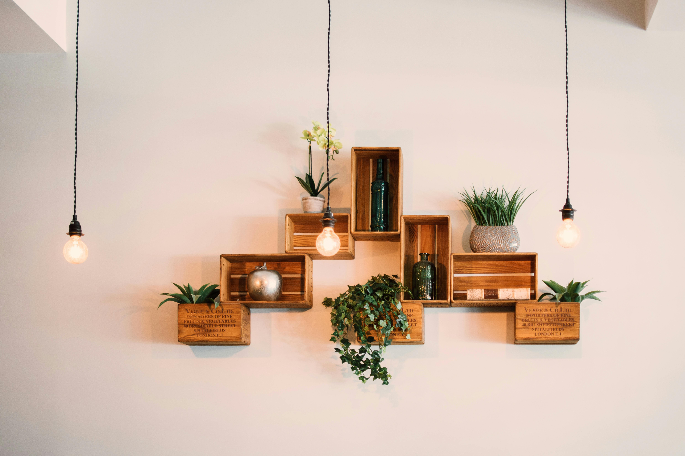

Wir arbeiten ruhig, präzise und mit einem klaren Blick für Materialität, Licht und Raumwirkung.
Malerbetrieb in Berlin
Haltung
Schwerpunkte
Räume, Fassaden und Oberflächen mit Gefühl für Wirkung gestalten
Wir gestalten Innenräume, modernisieren Bestandsflächen und entwickeln Farbkonzepte, die Ruhe, Wertigkeit und Klarheit ausstrahlen. Dabei achten wir auf saubere Ausführung, stimmige Materialien und Ergebnisse, die im Alltag dauerhaft überzeugen.
Innenräume, Fassaden, Renovierung und Farbkonzepte werden bei uns sorgfältig und hochwertig umgesetzt.


Anspruch
Gute Malerarbeit zeigt sich nicht nur in Farbe, sondern in Oberfläche, Licht und einem stimmigen Raumgefühl.
Genau darin liegt unser Anspruch. Wir schaffen Flächen, die sauber ausgeführt sind, zum Raum passen und eine Wirkung entfalten, die auch nach langer Zeit ruhig und hochwertig bleibt.
Oberflächen mit Präzision
Saubere Kanten, ruhige Flächen und fein gearbeitete Übergänge sind für uns ein sichtbares Qualitätsmerkmal.
Farbe mit Blick für den Raum
Farbigkeit soll nicht dominieren, sondern Architektur, Licht und Nutzung sinnvoll unterstützen.
Ausführung mit Gefühl für Material
Wir arbeiten so, dass Wände, Decken und Oberflächen nicht nur neu aussehen, sondern wirklich stimmig wirken.
Leistungen
Unsere Leistungen verbinden handwerkliche Präzision mit einem sicheren Blick für Wirkung.
Wir übernehmen Arbeiten im Innen- und Außenbereich mit dem Anspruch, Räume und Flächen nicht nur zu erneuern, sondern sichtbar aufzuwerten.
Innenräume
Wir gestalten Wände, Decken und Raumflächen so, dass Wohn- und Arbeitsbereiche klar, ruhig und hochwertig wirken.
- Saubere Flächen, präzise Abschlüsse und stimmige Übergänge
- Raumwirkung im Zusammenspiel mit Licht und Einrichtung mitdenken
- Hochwertige Ausführung im Bestand und bei Modernisierung
Fassaden
Fassadenarbeiten führen wir mit Blick auf Werterhalt, gepflegte Außenwirkung und ein harmonisches Gesamtbild des Gebäudes aus.
- Außenflächen dauerhaft und sauber aufbereiten
- Bestand, Umgebung und Architektur berücksichtigen
- Schutz und Erscheinungsbild sinnvoll verbinden
Renovierung
Bei Renovierungen achten wir auf sorgfältige Vorbereitung, Schutz angrenzender Bereiche und ein Ergebnis, das dauerhaft überzeugt.
- Ordentliche Abläufe in bewohnten oder genutzten Räumen
- Untergründe prüfen und fachgerecht vorbereiten
- Saubere Aufwertung statt bloßer optischer Erneuerung
Farbkonzepte
Wir entwickeln Farbkonzepte, die zum Raum, zum Licht und zur gewünschten Atmosphäre passen und Entscheidungen sicherer machen.
- Farbwirkung im Zusammenspiel mit Material und Tageslicht
- Ruhige Zonen, Akzente und Raumabfolgen gezielt planen
- Klarheit bei Auswahl und gestalterischer Richtung schaffen
Innenräume
Innenräume gewinnen an Qualität, wenn Oberfläche, Licht und Proportion zusammenpassen.
Deshalb betrachten wir Räume immer als Ganzes. Farbe, Material und handwerkliche Ausführung sollen sich so verbinden, dass ein ruhiger, klarer und hochwertiger Gesamteindruck entsteht.


Farbkonzepte
Farbe soll Räume tragen, nicht überdecken.
Wir entwickeln Farbwelten, die zur Architektur, zum Licht und zur Nutzung passen. Ziel ist immer eine stimmige Wirkung, die Ruhe schafft und dem Raum eine klare Identität gibt.
Ideal für Räume, die hochwertig wirken und gleichzeitig eine angenehme Zurückhaltung behalten sollen.
Fein abgestimmte Helligkeiten geben Flächen Ruhe, Weite und eine saubere, freundliche Präsenz.
Ein bewusster Akzent kann einen Raum gliedern, Materialität betonen oder bestimmte Bereiche hervorheben.
Arbeitsweise
Wir arbeiten mit einem klaren Blick für Detail, Wirkung und saubere Ausführung.
Gute Ergebnisse entstehen bei uns aus sorgfältiger Vorbereitung, einer klaren Materialentscheidung und einer handwerklichen Umsetzung, die im Ergebnis ruhig, hochwertig und stimmig wirkt.
Raum und Fläche richtig erfassen
Wir schauen uns Licht, Nutzung, Untergrund und gewünschte Wirkung genau an, bevor Farbe und Material festgelegt werden.
Farben und Oberflächen passend auswählen
Die Entscheidung für Farbigkeit und Finish folgt immer dem Raum und nicht nur einem kurzfristigen Trend.
Sauber ausführen und sorgfältig abschließen
Erst die präzise Ausführung macht aus einer guten Planung ein Ergebnis, das dauerhaft hochwertig wirkt.
FAQ
Häufige Fragen zu unseren Malerarbeiten in Berlin
Übernehmen Sie auch komplette Renovierungen im Bestand?
Ja. Wir arbeiten regelmäßig in bestehenden Wohnungen, Häusern und gewerblich genutzten Räumen mit klaren, sauberen Abläufen.
Beraten Sie auch bei Farben und Raumwirkung?
Ja. Wir unterstützen bei der Auswahl von Farbwelten und Oberflächen, damit das Ergebnis zum Raum und zur Nutzung passt.
Führen Sie auch Fassadenarbeiten aus?
Ja. Wir übernehmen Fassadenarbeiten mit Blick auf gepflegte Außenwirkung, saubere Ausführung und dauerhafte Qualität.
Worauf legen Sie bei der Ausführung besonderen Wert?
Auf sorgfältige Vorbereitung, saubere Abschlüsse, hochwertige Oberflächen und ein Ergebnis, das auch nach längerer Zeit stimmig wirkt.
Kontakt
Sie möchten Räume, Fassaden oder Oberflächen hochwertig neu gestalten lassen?
Wir beraten Sie zu Material, Farbwirkung und Ausführung und entwickeln eine Lösung, die zu Raum, Gebäude und gewünschtem Eindruck passt.
Atelier Farbe Berlin
Für Innenräume, Fassaden und Farbkonzepte mit ruhiger Handschrift, hochwertigen Oberflächen und sauberer handwerklicher Umsetzung.